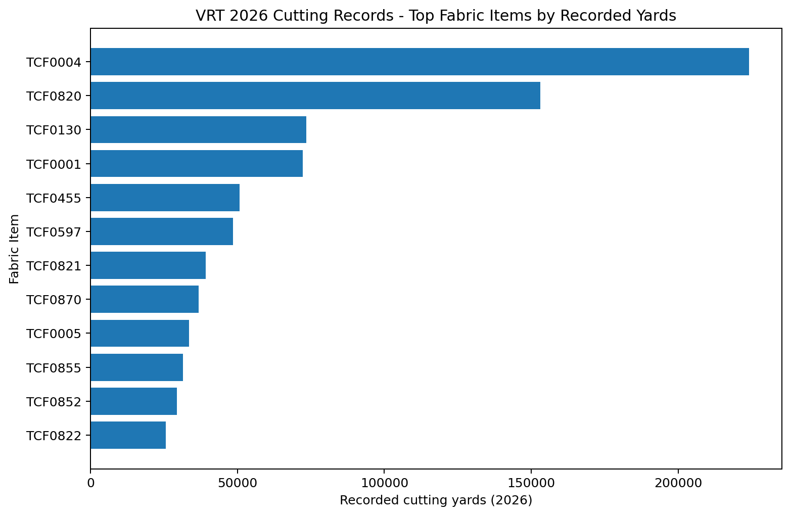

VRT 主料布料管理與紡織成衣基礎訓練手冊（完整版）
Fabric Main Material Management, Textile & Garment Manufacturing
Fundamentals
適用：Factory Director / Production / Cutting / Warehouse / IE / QA /
Purchasing
範圍：第一階段 - 主料（Fabric）；下一階段 - 輔料（Trims &
Accessories）
日期：2026-08-23
一、管理摘要 Executive
Summary
VRT
的主料結構以梭織（Woven）工業制服／工作服與桌布餐飲布品為主，常見重量約
3.5–9.2 oz，並同時存在短纖紡紗（如
12s、20s、26s、30s）與化纖長絲規格（如 75D、100D、300D）。
同一 TCF 布號不等於單一客戶專用。TCF0004、TCF0130、TCF0212
等都能在不同客戶／PO 中看到使用；因此「Customer Approval」應獨立於
Fabric Item Code 管理。
2026 Cutting
詳細紀錄顯示，TCF0004、TCF0820、TCF0130、TCF0001、TCF0455
等屬高頻使用布。這個排名是「裁剪紀錄用量指標」，不是會計庫存出庫帳。
目前最大的資料風險不是沒有布號，而是「布號、完整
Description、終端客戶、Buyer PO、工廠 Self
Key、Lot/染批」沒有完全整合。TCF0027 曾出現同一布號對到 AR WHITE 與 K126
NAVY 的異常，應列為主檔清理優先項。
管理者真正需要掌握 10
個欄位：成分、紗規格、織法、重量、幅寬/可用幅寬、顏色色號、Lot、縮率/歪斜、色牢度、適用
Customer/PO/Style。
二、VRT 資料口徑與限制
| cutting_backup_2026-08-21.json |
統計 2026 實際裁剪紀錄中的 Fabric Item、Fabric
Type、PO、Style、Yards |
最後有 Fabric Detail 的紀錄約到
2026-08-10；可能含重裁/多批次，不等同倉庫正式出庫帳 |
| VRT_Buyer_PO_2026_Master_FINAL.xlsx |
以 PO 反查客戶、款式與 Buyer 文件 |
Buyer archive 仍有缺口；工廠 Self Key 與 Buyer PO 有時不同 |
| FABRIC STOCK / OLD STOCK 歷史分析 |
核對 Item Code、ERP、Lot、庫位與舊布使用 |
Stock 表 Customer 欄多數為 TA CHIANG
SPINNING，較像供應來源，不能直接當終端客戶 |
三、2026 VRT
常用主料布號（依裁剪紀錄）

Source: VRT cutting_backup_2026-08-21.json；按 2026 detailed cutting
rows 彙總。Yards 為裁剪紀錄用量指標。
| TCF0004 |
7.1OZ/SDHV-64.5" (OB12*OB12) #ALSCO WHITE |
224,093 |
34 |
46 |
08-10 |
| TCF0820 |
6.14OZ-66" (OB12*300D) #AR WHITE |
153,138 |
36 |
51 |
08-10 |
| TCF0130 |
4.5OZ/T150-72.5" (OB26*OB26) #ALSCO WHITE |
73,405 |
9 |
8 |
08-10 |
| TCF0001 |
7.1OZ/SDHV-55.5" (OB12*OB12) #ALSCO WHITE |
72,251 |
9 |
13 |
07-15 |
| TCF0455 |
6.35OZ/SDMD-54" (OB12*T300D) #AA WHITE |
50,661 |
2 |
2 |
08-03 |
| TCF0597 |
6.35OZ-62.5" (OB12*T300D) #AA WHITE |
48,537 |
6 |
5 |
08-08 |
| TCF0821 |
6.14OZ-66" (SD12*300D) #K153 NAVY |
39,115 |
30 |
35 |
08-10 |
| TCF0870 |
6.14OZ-66" (SD12*300D) #1861 MAROON |
36,709 |
8 |
2 |
08-10 |
| TCF0005 |
7.1OZ/SDHV-64.5" (SD12*SD12) #6283 BLACK |
33,583 |
19 |
13 |
07-09 |
| TCF0855 |
4.27OZ-54" (188T*103T/75D*100D) NAVY-MS |
31,390 |
15 |
10 |
08-04 |
| TCF0852 |
4.27OZ-54" (188T*103T/75D*100D) CEIL BLUE-MS |
29,331 |
13 |
10 |
06-01 |
| TCF0822 |
6.14OZ-66" (SD12*300D) #K156 WEDGEWOOD BLUE |
25,643 |
22 |
20 |
08-10 |
| TCF0837 |
6.14OZ-66" (SD12*300D) #K594 F.GREEN |
25,239 |
23 |
19 |
08-08 |
| TCF0010 |
7.1OZ/SDHV-92.5" (OB12*OB12) #ALSCO WHITE |
23,631 |
7 |
4 |
06-09 |
| TCF0856 |
4.27OZ-54" (188T*103T/75D*100D) ROYAL-MS |
22,849 |
12 |
9 |
02-14 |
| TCF0898 |
6.1OZ-65.5" (T300D*SD12) #AA WHITE |
19,434 |
1 |
1 |
07-14 |
| TCF0427 |
4.5OZ/T150-72.5" (SD26*SD26) #800 BLACK |
18,699 |
9 |
7 |
07-01 |
| TCF0491 |
7.1OZ-65" (SD12*SD12) #ADI010 UNI BLUE |
18,038 |
8 |
6 |
07-13 |
四、VRT 主要布料「家族」怎麼看
4.1 7.1 oz ALSCO WHITE
家族：重量接近，但幅寬不同
| TCF0001 |
7.1OZ / 55.5" / OB12×OB12 / ALSCO WHITE |
較窄；常見 Australia/ALSCO 類款 |
| TCF0004 |
7.1OZ / 64.5" / OB12×OB12 / ALSCO WHITE |
高頻主布；跨 WPL / ALSCO / Dickson 等用途 |
| TCF0007 |
7.1OZ / 72.5" / OB12×OB12 / ALSCO WHITE |
較寬；相同「白」不代表可直接替 TCF0004 |
| TCF0010 |
7.1OZ / 92.5" / OB12×OB12 / ALSCO WHITE |
寬幅，常見大型布品用途 |
| TCF0016 |
7.1OZ / 111" / OB12×OB12 / ALSCO WHITE |
超寬幅；Marker/Spreading 與一般成衣布不同 |
4.2 6.14 oz / 66" ADI
彩色家族：結構相近，顏色碼不同
| TCF0820 |
OB12×300D |
AR WHITE |
3125K、4426、1117K、HA/A 系列 |
| TCF0821 |
SD12×300D |
K153 NAVY |
HA1072、HA1521、1734 等 |
| TCF0822 |
SD12×300D |
K156 WEDGEWOOD BLUE |
HA1521、O1113K、3269 等 |
| TCF0823 |
SD12×300D |
K797 RED |
1112G、1754、A1095 等 |
| TCF0825 |
SD12×300D |
K396 MADRITE GREY |
1112G、3269、1518 等 |
| TCF0837 |
SD12×300D |
K594 F.GREEN |
HA1521、HA1072、1521G 等 |
| TCF0870 |
SD12×300D |
1861 MAROON |
O1113KMRN |
4.3 4.27 oz / 54" Respond Scrub
輕量家族
| TCF0851 |
188T×103T / 75D×100D |
BLACK-MS |
RES1100/1200/1300 系列 |
| TCF0852 |
188T×103T / 75D×100D |
CEIL BLUE-MS |
RES1100/1200/1300 系列 |
| TCF0854 |
188T×103T / 75D×100D |
MISTY-MS |
RES 系列 |
| TCF0855 |
188T×103T / 75D×100D |
NAVY-MS |
RES1100/1103/1201/1301 等 |
| TCF0856 |
188T×103T / 75D×100D |
ROYAL-MS |
RES1100/1201/1301 等 |
4.4 VRT 已明確標示的 Twill
斜紋布例子
| TCF0562 |
5.75OZ / 58.5" / T/C21×T/C21 / 2/1 TWILL / BAR18 WHITE |
1450WHTMH、NMC6785 等 |
2/1 = 經紗跨 2、壓 1，表面會有斜紋線 |
| TCF0888 |
9.2OZ / 72" / 60P40C / 10s×10s / 3/1 TWILL / 9680 WHITE |
1504/1505、T3539 等 |
重磅 3/1 斜紋，比 2/1 浮長更長、外觀更明顯 |
| TCF0567 |
6.9OZ / 58.5" / TC22×TC16 / 1/3 TWILL / 235gsm |
203-PWH、DI8KC、1525WHT 等 |
1/3 與 3/1 的正反面/浮長方向不同 |
五、布號 → Customer →
PO → Style：VRT 實際對應案例
| TCF0004 |
WPL；另見 Australia/ALSCO、Dickson |
WPL 0005677 → 182/183 White；歷史也有多款 ALSCO White |
布名寫 ALSCO WHITE 不代表只能 ALSCO 用；Customer Approval
要另管 |
| TCF0130 |
WPL / NU / Lechner |
WPL 0005677 → 103-WH；NU S27-1103 → 4512 White；Lechner BL17062026 →
LS2683WH |
非常典型的一布多客戶 |
| TCF0820 |
ADI |
203357 → 1117KWHT；202321/202370 → 3125K/4426 等 |
ADI 高頻白布；一旦短料會同時影響多款 |
| TCF0870 |
ADI |
202831 / 202409 / 202517 → O1113KMRN |
Maroon 主布；Lot / Shade / 色牢度需高度追溯 |
| TCF0591 |
Magnus |
Factory PO 6155 → CC133；Buyer Master 另見 PO615503 / CC133 |
顯示 Self Key / Buyer PO 可能不是同一格式 |
| TCF0212 |
ADI / Lechner |
ADI A2134NBL；Lechner BL17062026 → LS2683NV |
同一技術布可跨客戶，但仍需核對客戶規格/測試核准 |
六、VRT
主料資料目前最需要修的 6 件事
1. Customer 欄位意義不清：Stock 表大量顯示 TA CHIANG SPINNING，應拆成
Supplier（供應商）與 End Customer（終端客戶）。
2. TCF0027 主檔異常：歷史資料曾同時對到 5.5OZ AR WHITE 與 7.1OZ K126
NAVY，物性完全不同，需查實物標籤、ERP 與舊用料表。
3. Fabric Description 不完整：不少布規格只有 oz / width / yarn code /
color，沒有明確 Fiber Composition（成分）與 Weave（織法）。
4. Buyer PO 與工廠 Self Key 有差：如 Magnus CC133，現場 6155 與 Buyer
Master PO615503 的格式不同，跨表 Join 容易漏。
5. Lot / Dye Lot 沒有成為生產放行核心鍵：同 Item
同色也可能有色差、縮率差與牢度差。
6.
「能用」和「可替代」沒有分清：同色同重不代表可替代，還要同成分、紗支、織法、幅寬、後整理與客戶核准。
七、VRT 建議的 Fabric
Master 最少欄位
| 身份 |
TCF Item、ERP Code、Supplier、Supplier Fabric Code |
知道「這是誰的哪支布」 |
| 物性 |
Fiber Content、Yarn Count/Denier、Warp×Weft、Weave |
判斷是不是同一技術規格 |
| 尺寸/重量 |
Finished Width、Usable Width、oz/yd²、GSM |
Marker、耗碼與成本 |
| 顏色 |
Color Name、Color Code、Lot/Dye Lot、Shade Group |
防止混缸/色差 |
| 性能 |
Shrinkage W/L、Skew/Bow、Colorfastness、Tensile/Tear、Pilling |
客訴與放行 |
| 商務 |
Approved Customer、PO、Style、BOM Revision |
知道誰核准、哪張單能用 |
| 庫存 |
Roll No.、Yards、Quality、Location、Received Date |
能找得到、能盤點 |
第二部分：紡織與成衣基礎理論
- VRT 現場完整版
| 目標不是把主管訓練成紡織工程師或機修，而是做到「現場名詞聽得懂、規格看得懂、機台用途看得懂、異常問得對」。每個名詞都用：①是什麼
②怎麼看 ③用在哪裡 ④容易出什麼問題。 |
八、先把整條供應鏈看懂：從纖維到成衣
| 1. 纖維 |
Fiber |
天然或人造的最小原料單位。 |
Cotton、Polyester、Viscose、Nylon、Staple、Filament |
| 2. 紡紗/製絲 |
Spinning / Filament Extrusion |
短纖加捻成紗；化纖也可直接拉成連續長絲。 |
Ne 12s、20s；75D、100D、300D；Ply、Twist |
| 3. 整經/漿紗 |
Warping / Sizing |
把數千根經紗排平行並增加耐磨性。 |
Warp beam、Size、Tension |
| 4. 織布/針織 |
Weaving / Knitting |
經緯交織或線圈成布。 |
Plain、Twill、Satin；Jersey、Rib、Interlock |
| 5. 坯布 |
Greige Fabric |
剛成布、尚未完成染整。 |
Greige/Grey、EPI/PPI、Defect |
| 6. 前處理/染色 |
Preparation / Dyeing |
退漿、精練、漂白、染色或印花。 |
Desize、Scour、Bleach、Piece Dye |
| 7. 後整理 |
Finishing |
控制幅寬、縮率、手感與功能。 |
Stenter、Heat-set、Sanforize、DWR |
| 8. 驗布/入倉 |
Inspection / Warehouse |
確認規格、Lot、色差、缺點、數量。 |
4-point、Shade、Usable Width、Roll No. |
| 9. 拉布/裁剪 |
Spreading / Cutting |
排 Marker、疊層、裁片。 |
Marker、Ply、Nap、Notch、Bundle |
| 10. 車縫/整燙/包裝 |
Sewing / Finishing / Packing |
把裁片縫成成衣並完成出貨。 |
301、516、Coverstitch、SPI、Pressing、AQL |
九、纖維 Fiber：布的最原始材料
9.1
纖維不是「線」：先分 Staple 短纖與 Filament 長絲
| Staple Fiber |
短纖 |
一段一段的短纖維，需要把很多根抱在一起加捻才成紗。 |
棉天然就是短纖；Polyester 也可切成短纖。 |
纖維長度、細度、棉結、毛羽會影響紡紗與布面。 |
| Filament |
長絲/連續絲 |
一根可以連續很長的化纖絲，不必先切短。 |
Polyester filament、Nylon filament。 |
通常用 Denier/Tex 表示粗細。 |
| Monofilament |
單絲 |
一條紗本身就是一根較粗長絲。 |
魚線、網布、特殊工業用途。 |
較硬、透明感明顯。 |
| Multifilament |
複絲/多股長絲 |
一條紗由很多根很細的長絲組成。 |
75D/72F、150D/144F 等。 |
F 越多，單根絲通常越細、手感可更柔。 |
| Microfilament / Microfiber |
超細長絲/超細纖維 |
不是單看總 Denier，而是看每根 filament 的細度。 |
例如總紗75D但由很多F組成。 |
「細絲」不是精確規格，必須問 D/F 或單絲細度。 |
| 現場講「細絲」常只是說這條化纖長絲很細，不是完整規格。真正要問的是：總粗細多少
D？裡面幾根 filament（F）？例如 75D/72F = 整條紗總 75 denier，由 72
根細絲組成。只說「75D」仍不知道每根單絲有多細。 |
9.2 VRT/工作服最常碰到的纖維
| 棉 |
Cotton / C |
吸汗、舒適、耐熱、手感自然。 |
會縮、皺、吸水後變重。 |
縮率、色牢度、尺寸穩定、洗後外觀。 |
| 聚酯 |
Polyester / PET / P |
強度高、快乾、耐皺、尺寸穩定。 |
靜電、吸油污、熱過高會產生熱定型影響。 |
染色多用分散染料；高溫/熱定型條件重要。 |
| 聚酯/棉混紡 |
T/C、P/C |
兼顧耐磨、快乾與棉的舒適感。 |
比例不同性能差很多。 |
60P/40C、65P/35C 等一定要看正式成分比例。 |
| 尼龍 |
Nylon / PA |
耐磨、強度高、柔韌。 |
吸濕、黃變/熱敏感依品種而異。 |
袋材、功能面料、輔料常見。 |
| 黏膠 |
Viscose / Rayon |
吸濕、柔軟、垂墜好。 |
濕強較低、易變形/縮。 |
醫護/輕服裝混紡常見。 |
| 彈性纖維 |
Spandex / Elastane / Lycra® |
延伸大、回復性好。 |
怕高熱、氯與老化條件。 |
比例雖少但決定伸縮；裁剪需 Relaxation。 |
十、紗
Yarn：12s、300D、細絲、股數到底在講什麼
10.1 Spun Yarn
短纖紡紗 vs Filament Yarn 長絲紗
| 來源 |
很多短纖維排列、牽伸、加捻成一條紗。 |
一根或多根連續長絲直接成紗。 |
| 常見規格 |
Ne 12s、20s、21s、26s、30s。 |
75D、100D、150D、300D；也可能寫 Tex。 |
| 表面 |
有毛羽，外觀較像棉。 |
較平滑、光澤可較高；Textured 後可蓬鬆。 |
| VRT例 |
OB12、SD12、T/C21 等需再配供應商代碼判讀。 |
75D×100D、300D；T300D 是否代表 textured 必須向供應商確認。 |
10.2 Ne 紗支：12s / 20s / 26s / 30s
Ne（English Cotton
Count，英制棉紗支）屬於「間接紗支」：同樣重量下可以做得越長，代表紗越細，所以數字越大通常越細。
| 10s–12s |
粗支紗 |
較粗 |
重磅、較厚實、外觀粗獷。 |
| 20s–21s |
中粗 |
中等 |
常見制服/工作服。 |
| 26s–30s |
較細 |
較細 |
較輕、表面細緻。 |
| 40s以上 |
細支 |
更細 |
襯衫、較細緻服裝常見。 |
| Ne 12s 比 20s 粗；20s 比 30s 粗。這和 Denier 的方向相反。 |
10.3 Denier / Tex：75D、100D、300D
Denier（D）是「9,000公尺紗線有幾克」。這是直接紗支：數字越大，同樣長度越重，通常也越粗。Tex
則是 1,000公尺有幾克。
| 75D |
較細的化纖長絲 |
VRT 4.27oz Respond Scrub 類可看到 75D。 |
| 100D |
比75D粗 |
常與75D配成經緯不同粗細。 |
| 300D |
較粗、強韌的長絲 |
VRT 6.14oz 系列常見 12s × 300D。 |
| F |
Filament count，這條紗由幾根單絲構成 |
75D/72F = 總75D、72根單絲。 |
10.4 Ply、Twist、S/Z 捻
| Single yarn |
單紗 |
一次紡成的一條紗。 |
強力與毛羽依紗本身決定。 |
| Ply yarn |
股線/合股紗 |
2條或以上單紗再合捻，例如 2-ply。 |
更均勻、強力較高、外觀不同。 |
| Twist |
捻度 |
纖維/單紗被扭在一起的程度。 |
太低易鬆散，太高會硬、扭矩大。 |
| TPI / TPM |
每英吋/每公尺捻數 |
量化捻度。 |
影響強度、手感、起毛與扭斜。 |
| S twist / Z twist |
S捻 / Z捻 |
紗線斜向像英文字母 S 或 Z。 |
縫線/織物結構與機台方向可能受影響。 |
10.5 FDY、DTY、POY：化纖長絲常見字
| POY |
Partially Oriented Yarn |
半延伸原絲，通常還要後續牽伸/假撚。 |
多為中間材料，不一定直接成最終布。 |
| FDY |
Fully Drawn Yarn |
已充分牽伸、尺寸較穩定的長絲。 |
較平滑、光澤/強力穩定。 |
| DTY |
Draw Textured Yarn |
牽伸假撚變形絲。 |
較蓬鬆、有彈性、較像短纖手感。 |
| ATY |
Air Textured Yarn |
空氣變形絲。 |
蓬鬆、外觀可更像紡紗。 |
| OB、SD、SDHV、SDMD、T150、SD170、T300D
等在你們資料中帶有供應商/工廠內碼特徵。除非拿到 TA CHIANG/布廠 Yarn
Specification，不能把每一個字母硬翻成國際標準名稱。 |
十一、布
Fabric：先分梭織、針織、非織造
| 梭織 |
Woven |
經紗 Warp + 緯紗 Weft 交錯。 |
尺寸穩、結構清楚、可做平紋/斜紋/緞紋。 |
工作服、襯衫、桌布、制服。 |
| 針織 |
Knitted |
一條或多條紗形成線圈互相套結。 |
伸縮較大、柔軟。 |
T-shirt、Polo、內衣、羅紋。 |
| 非織造 |
Nonwoven |
纖維不先成紗或不經傳統織/針織，直接黏結/針刺/熱壓。 |
製程快、用途特定。 |
口罩、不織布襯、拋棄式用品。 |
11.1 梭織最基本方向：Warp /
Weft / Selvedge
| Warp |
經紗 |
通常沿布長方向，與布邊平行。 |
經紗在織造時張力較高，常需要漿紗。 |
| Weft / Filling |
緯紗 |
橫跨布寬，一緯一緯打入。 |
PPI、緯斜、Bow 主要與緯向相關。 |
| Selvedge |
布邊 |
布兩側形成較密/穩定的邊。 |
不一定可用於 Marker，需區分 Finished Width / Usable Width。 |
| Face / Back |
正面/反面 |
斜紋、印花、後整理常有明顯正反。 |
裁剪不可正反混。 |
十二、三大基本織法：平紋、斜紋、緞紋
12.1 平紋 Plain Weave：1/1
是什麼
Plain 1/1 =
一根經紗「上一根緯紗、下一根緯紗」反覆交錯；相鄰經紗則相反。交織點最多，所以結構穩定。
| 1/1 |
1上1下，不是「一層布」。 |
| 交織點 |
經緯交叉的位置；越多通常越穩定、越不易滑移。 |
| Poplin / Broadcloth |
都是平紋家族名稱，但真正差別仍要看紗支、密度、重量、整理。 |
| Canvas / Duck |
較重的平紋布，粗紗、高密、耐磨，用途偏工作/工業。 |
| 風險 |
緯斜、經條、緯檔、破洞、粗節、色差；平紋並不代表一定不會歪。 |
12.2 斜紋
Twill：為什麼表面會有斜線
Twill 的特徵是「浮長
Float」有規律地每一根往旁邊移一格，因此表面形成斜向紋路。浮長 =
某根經紗一次跨過多根緯紗才再交織。
| 2/1 Twill |
上2、下1（或依組織圖理解為經浮2再壓1）。 |
斜紋較細，交織較3/1多。 |
VRT TCF0562 類已有 2/1 TWILL。 |
| 3/1 Twill |
上3、下1。 |
浮長更長，斜紋更明顯，表面較柔、耐磨感強。 |
VRT 9.2oz TCF0888 類已有 3/1 TWILL。 |
| 2/2 Twill |
上2、下2。 |
正反較均衡、斜線清楚。 |
制服/機能布可能使用。 |
| Right-hand / Left-hand |
右斜 / 左斜 |
斜紋方向不同。 |
條紋、拼接、左右片若方向錯會很明顯。 |
| ① Skew 緯斜：整條緯紗方向偏斜；② Bow 弓緯：緯紗像弓形；③ Twill
direction 斜紋方向混錯；④ 浮紗/勾紗；⑤
洗後扭斜。工作服褲腿、袖管、條紋款特別容易被放大。 |
12.3 緞紋 Satin / Sateen
Satin/Sateen
的共同概念是浮長較長、交織點較少，因此表面更平滑、有光澤、垂墜好，但也較容易勾紗或滑移。一般把長絲為主的叫
Satin，短纖紡紗為主常稱 Sateen；實務仍以組織與規格為準。
12.4
其他你可能在規格表看到的織物名
| Oxford |
牛津布 |
平紋變化組織，常用較粗/成束紗，表面有方格感；襯衫、制服。 |
| Ripstop |
防撕裂格 |
間隔加入較粗加強紗形成小方格，撕裂時可限制裂口擴大。 |
| Dobby |
多臂小提花 |
利用 Dobby 機構做小幾何組織，不等於印花。 |
| Jacquard |
提花 |
逐根或細分控制經紗做複雜圖案。 |
| Herringbone |
人字斜 |
斜紋方向週期反轉，形成V字/人字。 |
| Drill |
卡其/斜紋工作布類 |
常見強斜紋、較耐磨，工作服常用。 |
十三、布規格表
Fabric Spec 每個欄位都在說什麼
| Composition |
Fiber Composition |
成分比例，例如 65% Polyester / 35% Cotton。 |
不能只看外觀或布號判定。 |
| Weight |
GSM / oz/yd² |
單位面積重量；不是一整卷有多重。 |
同名布也要看允差。 |
| Width |
Finished Width |
完成染整後的總幅寬。 |
Marker 能不能排下的第一個條件。 |
| Usable Width |
可用幅寬 |
扣掉布邊、針孔、邊部缺陷後可實際裁剪的寬度。 |
成本計算比 Finished Width 更關鍵。 |
| EPI |
Ends Per Inch |
每英吋有幾根經紗。 |
經密。 |
| PPI |
Picks Per Inch |
每英吋有幾根緯紗。 |
緯密。 |
| Thread Count |
總紗密 |
有些市場把 EPI+PPI 作總數，但不能只看總數。 |
經/緯比例仍要分開看。 |
| Color Code |
色號 |
客戶/布廠給顏色的識別碼。 |
NAVY 只是色名；K153 才是更精確識別。 |
| Lot / Dye Lot |
染批/批號 |
同一染缸/連續生產批次的識別。 |
同色不同 Lot 仍可能有 Shade 差。 |
| Shade |
色光/色階 |
同一色號實際視覺差異。 |
裁剪需 Shade grouping。 |
| Handfeel |
手感 |
軟、硬、滑、挺、乾爽等觸感。 |
受後整理影響很大。 |
| Shrinkage |
縮率 |
洗後/熱處理後經緯尺寸變化。 |
Pattern allowance 與成衣尺寸直接受影響。 |
| Skew |
緯斜 |
緯線整體斜掉。 |
褲腿/條紋會扭。 |
| Bow |
弓緯 |
緯線中央或邊部呈弓形。 |
桌布、條紋與橫線圖案敏感。 |
13.1 GSM 與 oz 怎麼換算
服裝布常見 oz 通常指 oz/yd²。概略換算：1 oz/yd² ≈ 33.906 GSM。例：7.1
oz 約 241 GSM；6.14 oz 約 208 GSM；4.27 oz 約 145
GSM。實際驗收仍以客戶/供應商允差為準。
十四、從紗到布：整經、漿紗、穿綜、織布
| 筒子架 |
Creel |
放置大量經紗筒子。 |
紗支、Lot、張力器、斷紗感測。 |
混紗、張力不均、斷頭。 |
| 整經機 |
Warping Machine |
把很多經紗平行捲到經軸。 |
根數、張力、排紗、速度。 |
疊紗、交叉紗、鬆緊條。 |
| 漿紗機 |
Sizing Machine |
經紗上漿增加織造耐磨。 |
漿液濃度、溫度、烘燥、上漿率。 |
漿斑、過硬、毛羽/斷經。 |
| 穿綜/穿筘 |
Drawing-in / Denting |
經紗按組織穿過綜絲與筘。 |
順序與組織圖。 |
穿錯造成經條/組織錯。 |
| 織機 |
Loom |
開口、引緯、打緯、送經、卷取形成布。 |
張力、緯紗、布面、停台原因。 |
斷經、斷緯、緯縮、稀密路、停車痕。 |
14.1 織機每一緯的 5 個動作
Shedding 開口：綜框/綜絲把不同經紗抬起或壓下，形成緯紗通道。
Picking / Weft Insertion 引緯：把一根緯紗送過整個幅寬。
Beat-up 打緯：筘 Reed 把剛送入的緯紗推到布口。
Let-off 送經：經軸放出經紗並維持張力。
Take-up 卷取：已織好的布被捲起，同時決定/影響 PPI 與生產節奏。
14.2 常見織機種類與「速度」
| 有梭織機 |
Shuttle Loom |
梭子帶緯紗往返。 |
常用 picks/min 看生產節奏。 |
老式、較慢、噪音大，但設備簡單。 |
| 劍桿織機 |
Rapier Loom |
劍帶/劍頭夾送緯紗。 |
picks/min |
適應紗種廣，換緯靈活。 |
| 噴氣織機 |
Air-jet Loom |
壓縮空氣把緯紗吹過去。 |
picks/min |
高速但依賴乾淨穩定壓縮空氣，耗能高。 |
| 噴水織機 |
Water-jet Loom |
水流送緯。 |
picks/min |
適合疏水性化纖，棉類通常不適合。 |
| 片梭織機 |
Projectile Loom |
小片梭夾住緯紗高速穿越。 |
picks/min |
寬幅/重布可見，設備機構特殊。 |
| 織機常講 picks/min（每分鐘打入幾根緯紗）；紡紗機可能講 spindle
rpm（錠子轉速）；車縫機通常講
sti/min（每分鐘針數）。現場口語都說「轉速」可以，但正式報告最好寫正確單位。 |
十五、染整：坯布為什麼會變成你最後拿到的成品布
| 燒毛 |
Singeing |
燒掉布面突出的毛羽，表面更乾淨。 |
過火焦黃、處理不均。 |
| 退漿 |
Desizing |
移除織造前上的漿料。 |
退不乾淨會影響染色/吸水。 |
| 精練 |
Scouring |
去油、蠟、雜質。 |
殘油、吸水不均。 |
| 漂白 |
Bleaching |
提高白度或作淺色底。 |
強力損傷、白度不均。 |
| 絲光 |
Mercerizing |
棉在張力下鹼處理，提高光澤/吸染/尺寸穩定。 |
控制不當會幅寬/強力異常。 |
| 染色 |
Dyeing |
把染料固定到纖維。 |
色差、缸差、頭尾差、牢度。 |
| 印花 |
Printing |
局部上色形成圖案。 |
套色、滲化、手感。 |
| 定幅/熱定型 |
Stenter / Heat Setting |
拉到設定幅寬並熱處理，尤其聚酯尺寸穩定。 |
幅寬、克重、手感、歪斜受影響。 |
| 預縮 |
Sanforizing / Compressive Shrinkage |
先機械收縮，降低後續洗縮。 |
經緯縮率不穩。 |
| 軋光 |
Calendering |
輥壓讓布面更平/亮。 |
手感/光澤不均。 |
| 柔軟整理 |
Softener Finish |
改善手感。 |
過量可能影響吸水/縫製。 |
| 防潑水 |
DWR Finish |
讓水珠不易潤濕表面。 |
耐洗性、化學合規。 |
| 樹脂/免燙 |
Resin / Easy-care |
改善皺褶與尺寸穩定。 |
手感變硬、強力下降風險。 |
15.1 染色方法與染料名詞
| Piece Dye |
匹染/布染 |
布織好後整匹染色；工作服最常見類型之一。 |
| Yarn Dye |
紗染 |
紗先染色再織，格子/條紋色紗布常用。 |
| Garment Dye |
成衣染 |
衣服縫好後整件染，尺寸/輔料相容性要求高。 |
| Reactive Dye |
反應染料 |
棉/纖維素常見，色牢度與水洗控制重要。 |
| Disperse Dye |
分散染料 |
Polyester 常用，需高溫/載體等條件。 |
| Vat Dye |
還原染料 |
棉工作服/高牢度色系常見，如 indigo 類屬特殊系統。 |
| Pigment |
顏料 |
靠黏著劑附著表面，不是溶進纖維。 |
十六、驗布與品質：布倉/QA
必懂的名詞
| 4-Point System |
四分制驗布 |
依缺點長度/嚴重度計1–4分，再依客規判定卷/批是否合格。 |
| Shade Band |
色階帶/色差分組 |
把同色不同卷分成可接受的色階組，避免同件拼片色差。 |
| Head-Center-Tail |
頭中尾色差 |
一卷布頭、中、尾顏色不一致。 |
| Side-to-Side |
左右色差 |
同一幅布左右邊顏色不同。 |
| Roll-to-Roll |
卷與卷色差 |
不同卷間色光不同。 |
| Broken End |
斷經 |
某根經紗斷掉造成縱向缺陷。 |
| Missing Pick |
缺緯 |
某根緯紗沒打入，形成橫向缺陷。 |
| Barre / Streak |
條花/條影 |
原料、張力、染色等造成明暗條。 |
| Slub |
粗節 |
紗局部突然變粗；可能是設計也可能是缺點。 |
| Nep |
棉結/纖維結粒 |
布面小白點/顆粒。 |
| Oil Stain |
油污 |
織機、車縫機或搬運油污染。 |
| Hole |
破洞 |
布組織破損。 |
| Snag |
勾紗 |
長絲/浮長被尖物勾出。 |
| Pilling |
起球 |
摩擦後纖維纏成小球。 |
| Abrasion |
耐磨 |
表面抵抗摩耗的能力。 |
| Tensile Strength |
拉伸強力 |
拉到斷裂需要的力量。 |
| Tear Strength |
撕裂強力 |
已有裂口後繼續撕開所需力量。 |
| Seam Slippage |
接縫滑移 |
縫線旁布紗被拉開，接縫出現縫隙。 |
| Crocking / Rubbing Fastness |
摩擦牢度 |
乾/濕摩擦會不會掉色沾到別的布。 |
| Wash Fastness |
水洗牢度 |
洗後褪色與沾色程度。 |
| Light Fastness |
耐光牢度 |
日光/光照下褪色程度。 |
| Dimensional Stability |
尺寸穩定性 |
洗/熱處理後長寬變化。 |
十七、裁剪
Cutting：布進廠後真正開始變成衣服
| Relaxation |
鬆布/回縮 |
彈性或受張力布先放鬆，讓尺寸回穩再裁。 |
| Spreading |
拉布/鋪布 |
依 Marker 長度把布一層層疊起。 |
| Ply |
層數 |
一個 Lay 疊了幾層布。 |
| Lay |
床/裁床鋪布批次 |
一批已完成鋪布、準備裁剪的布層。 |
| Marker |
排版圖 |
把所有紙樣排在固定寬度/長度內，決定耗布效率。 |
| Marker Efficiency |
排版效率 |
紙樣面積 ÷ Marker 總面積；越高通常耗布越省。 |
| Nap / One-way |
毛向/單向 |
有方向性布不能任意翻轉排片。 |
| Face-to-Face |
面對面鋪布 |
正面相對的鋪布方式，需配合左右片/對稱要求。 |
| Notch |
剪口 |
裁片定位的小缺口，幫助車縫對位。 |
| Drill Mark |
鑽孔記號 |
口袋位、省道位等內部定位點。 |
| Bundle |
裁片綁包 |
按 Size/Color/PO/Lot/Sequence 分包。 |
| Shade Segregation |
色差分層/分包 |
不同 Shade 不應混進同一件成衣。 |
十八、車縫基礎：先懂針跡
Stitch、接縫 Seam、機器 Machine 是三件不同事
| Stitch（針跡）= 線怎麼互相套結；Seam（接縫）=
兩塊布怎麼重疊/折疊再縫；Machine（機台）=
用什麼機構把該針跡做出來。同一種機台可能有不同針距/規格，同一類接縫也可能由不同機台完成。 |
18.1 最常見針跡類型
| 平車/單針 |
Lockstitch / 301 |
1根針線 + 1根梭芯底線互鎖。 |
一般拼縫、明線、口袋。 |
正反都整齊、穩定；底線容量有限。 |
| 雙針平車 |
2-needle Lockstitch |
兩組301平行線。 |
雙明線、裝飾/加固。 |
兩線距固定 by gauge。 |
| 鏈車 |
Chainstitch / 401 |
針線與Looper線形成鏈式。 |
長接縫、腰頭、工作服。 |
有彈性、無梭芯；若線頭處理差可能脫鏈。 |
| 3線拷克 |
3-thread Overedge / 504 |
1針 + 2 looper 線包住布邊。 |
單純包邊、防脫紗。 |
省線，但拼縫強度低於4/5線。 |
| 4線拷克 |
4-thread Overlock / 514 |
2針 + 2 looper。 |
針織拼縫、需伸縮的接縫。 |
比3線強、彈性好。 |
| 5線拷克 |
5-thread Safety Stitch / 516 |
2針 + 3 looper；一組鏈式安全縫 + 一組3線包邊。 |
梭織工作服側縫、襯衫/褲類安全接縫。 |
強度高且同時包邊，VRT工作服很實用。 |
| 繃縫/冚車 |
Coverstitch / 406/407/602/605 |
正面2–3條平行針線，反面Looper覆蓋；可加上面Cover thread。 |
T-shirt下擺、袖口、包邊、針織。 |
伸縮好、外觀整齊。 |
| 三本針 |
3-needle machine（現場俗稱） |
「本」是日式/工廠計數語感，意思是3根針；可能是三針繃縫，也可能是三針鏈式/送筒機。 |
三線平行明線、包縫、lap seam。 |
一定要看機型與線跡，不能只聽“三本”判定。 |
18.2 「5線拷克」拆開看就不難
5線拷克不是「五根針」。典型 5-thread safety stitch 是：2根針 + 3組
looper/thread path，共5條線。它把兩種功能合在一次完成：
因此它很適合梭織制服、褲子、工作服的側縫/內縫。JUKI MO-6816S
官方即列為 2-needle safety stitching，最高 7,000
sti/min（實際設定依布料、針線、操作與品質要求）。
18.3 「三本針」到底是哪一台？
| 三本針 = 3 needles。若正面有3條平行線、反面有Looper網狀覆蓋，多半是
3-needle coverstitch；若是厚重工作服的包埋接縫/筒狀長縫，也可能是
3-needle chainstitch / feed-off-the-arm 類。現場報修/IE工序表應寫「機型
+ 針數 + 針距 + Stitch Class」，不要只寫三本。 |
| 2-needle bottom cover |
2針/3線（常見406） |
正面2條平行線，反面Looper覆蓋。 |
| 3-needle bottom cover |
3針/4線（常見407） |
正面3條平行線，反面Looper覆蓋。 |
| 2-needle top & bottom cover |
2針/4線（常見602） |
上下都有Cover效果。 |
| 3-needle top & bottom cover |
3針/5線（常見605） |
正面3針+上覆線，反面Looper；常見“三針五線”。 |
十九、成衣廠常見車縫機台：用途、速度、操作、保養
下表「速度」是理解機種能力用的典型/官方型號例子，不等於 VRT
每台機實際設定。真正設定要看機型銘牌、布重、針號、線粗、針距、附件與品質。
| 平車 |
1-needle Lockstitch |
拼縫、壓線、口袋、明線。 |
JUKI DDL-9000C 依版本/厚料設定最高約4,000–5,000 sti/min。 |
針、梭床/旋梭、送布牙、油污、線張力。 |
| 雙針 |
2-needle Lockstitch/Chainstitch |
兩條平行線、裝飾/加固。 |
依機型；通常低於或接近單針高速機能力。 |
針距Gauge、兩邊張力一致、跳針。 |
| 3/4/5線拷克 |
Overlock / Safety Stitch |
修邊、包邊、拼縫。 |
JUKI MO-6800S 系列最高7,000 sti/min。 |
上下刀、Looper、差動、針熱、油量、廢布吸除。 |
| 三本/繃縫 |
Coverstitch |
下擺、袖口、包邊、針織。 |
JUKI MF-7500系列依版本最高約5,000–6,500 sti/min。 |
Looper、針距、差動、上下Cover線、跳針。 |
| 鏈車 |
Chainstitch |
腰頭/長縫/工作服結構縫。 |
依機型。 |
Looper timing、線尾防脫鏈。 |
| 埋夾/送筒 |
Feed-off-the-arm Chainstitch |
袖/褲管等筒狀 lap seam。 |
依2/3針機型。 |
Puller/送布、針距、折邊器、Looper。 |
| 打棗 |
Bartack |
口袋角、皮帶耳、受力點加固。 |
電腦花樣循環，不宜只用RPM評估。 |
花樣、針數、線張力、壓腳位置。 |
| 鳳眼/平眼 |
Buttonhole Machine |
扣眼。 |
循環/針數比單純最高轉速更有意義。 |
刀位、扣眼長度、密度、切口。 |
| 釘鈕 |
Button Sewing |
釘2孔/4孔鈕。 |
看每循環時間與針數。 |
鈕距、腳高、線尾、鈕扣破裂。 |
| 釘扣/五爪扣 |
Snap Attaching Press |
壓合Snap/五爪扣。 |
用 cycle/min /壓力，不是sti/min。 |
模具、壓力、同心度、拉脫力。 |
19.1
sti/min、RPM、實際速度三者差別
| sti/min |
Stitches per Minute，每分鐘針跡數。 |
車縫機官方最常用的速度規格。 |
| RPM |
Revolutions per Minute，每分鐘旋轉圈數。 |
馬達/主軸/錠子等旋轉設備才是真正的轉速單位。很多車間口語會把sti/min也說成RPM。 |
| Max. speed |
機械最高規格 |
不是生產標準，不代表任何布都應跑滿。 |
| Set speed |
控制器限制速度 |
廠內可依工序、品質、操作員熟練度設定上限。 |
| Actual sewing speed |
實際踩車速度 |
受轉角、對位、附件、長度、手法、停頓影響；IE效率不能只看機器最高速。 |
| 若高速造成斷線、跳針、針熱熔紗、起皺、車歪、返修，實際 UPH
反而下降。厚重 7.1–9.2oz
工作服、交叉骨位、厚層接縫更應依試車結果設定，而不是一律把控制器開到最高。 |
二十、車縫機的核心調整名詞
| Stitch Length |
針距 |
太短：線密、易皺/傷布；太長：接縫可能鬆、外觀粗。 |
| SPI |
Stitches Per Inch，每英吋針數 |
SPI越高 = 針距越短；要依客規與布料。 |
| Thread Tension |
線張力 |
太緊起皺/斷線；太鬆浮線/線跡不鎖。 |
| Presser Foot Pressure |
壓腳壓力 |
太大壓痕/伸長；太小打滑/送料不穩。 |
| Feed Dog |
送布牙 |
把布向前送；高度/相位不對會打滑、刮布。 |
| Differential Feed |
差動送料 |
前後送布牙速度比不同；可控制針織起波或縮皺。 |
| Needle Gauge |
針距/針位間距 |
雙針/三針之間的固定距離，如3.2、4.8、5.6、6.4mm。 |
| Overedge Width |
包邊寬 |
拷克包住布邊的寬度，與針板/刀位/線跡相關。 |
| Looper |
彎針/勾線器 |
無梭芯機用它抓住針線形成鏈/包邊/繃縫。 |
| Hook |
旋梭/梭鉤 |
Lockstitch 機把針線帶過梭芯線形成301線跡。 |
| Timing |
時序/同步 |
針、Looper/Hook、Feed動作的相對時間。錯了會跳針、斷線、撞針。 |
| Needle Bar Height |
針桿高度 |
與Hook/Looper勾線位置配合；不正確會跳針。 |
| Knife |
上下刀 |
拷克機先切齊布邊；刀鈍會毛邊/推布。 |
| Puller |
拖輪/拉料器 |
在機後協助穩定送布，厚料/長縫常用。 |
| Binder / Folder |
包邊器/折邊器 |
附件把布條/布邊自動折成固定形狀再縫。 |
二十一、車針
Needle：不是斷了才換
| Needle System |
針型系統，如 DB×1、DP×5、DC×27、UY128GAS |
不同機台針長/針柄/勾槽不一，不能只看號數硬裝。 |
| Nm |
公制針號 |
針身直徑×100；Nm90 約0.90mm。數字大 = 針較粗。 |
| # / Singer size |
英美針號 |
例如 #11、#14、#18、#21；需與Nm換算對照。 |
| Ball Point |
圓頭/球頭針 |
針織常用，推開纖維而非切斷線圈。 |
| Sharp Point |
尖頭針 |
梭織常用，穿透緊密織物。 |
| Needle Heat |
針熱 |
高速摩擦產生熱；可熔傷Polyester線/布、斷線。 |
| Needle Deflection |
針偏/彎 |
厚骨位或高速穿透時針被推偏，可能撞Hook/Looper。 |
| 布越厚、線越粗，通常需要較粗針；但針不是越粗越好。太粗會留下針洞、切斷紗線、破壞防水/外觀。客規、機型、縫線商與試車結果要一起看。 |
二十二、車縫線
Sewing Thread：和織布用 Yarn 不完全一樣
| Sewing Thread |
車縫線 |
為高速針線摩擦、接縫強度與外觀專門設計。 |
| Spun Polyester |
滌綸短纖線 |
像棉線外觀，通用性高。 |
| Core-spun |
包芯線 |
中心高強度Filament，外層短纖包覆；強力與耐磨較好。 |
| Filament Thread |
長絲縫線 |
表面平滑、強力高；某些外觀/機台用途。 |
| Tex |
線粗規格 |
每1,000m有幾克；數字越大線越粗。 |
| Ticket / Tkt |
線號系統 |
不同線廠系統不完全同一算法，不能只跨品牌硬比數字。 |
| Lubrication |
縫線潤滑 |
降低高速摩擦與針熱；過多也可能油污。 |
| Thread Tension Balance |
上下線張力平衡 |
301鎖點應在布層中間，不應浮在正/反面。 |
二十三、常見車縫異常：看到現象就知道先查哪裡
| 跳針 |
Skipped Stitch |
針、Hook/Looper timing、針彎、壓腳/送料。 |
勾不到線圈、針裝反/彎、布抖動。 |
| 斷面線 |
Needle Thread Break |
針眼、張力、路徑、毛刺、針熱。 |
線過緊、穿線錯、零件毛刺、高速熱。 |
| 斷底線 |
Bobbin Thread Break |
梭芯、梭殼、毛刺、張力。 |
梭芯繞線不良、梭殼毛刺。 |
| 起皺 |
Seam Puckering |
線張力、SPI、送料、布縮。 |
線太緊、針距太密、上下層送料差。 |
| 爆口/滑紗 |
Seam Slippage |
布密度、縫份、SPI、接縫型式。 |
布紗被拉開，不一定是線斷。 |
| 車歪 |
Seam Crooked |
Guide、Folder、壓腳、操作手法。 |
導向不足、速度過高、布片對位不穩。 |
| 浮線/鳥巢 |
Loose Stitch / Bird Nest |
張力、穿線、挑線桿、剪線。 |
線沒有進 tension disc、起針線尾處理錯。 |
| 油污 |
Oil Stain |
機頭油量、漏油、清潔。 |
過度加油、油封/回油問題。 |
| 針洞 |
Needle Hole Damage |
針號/針尖、SPI。 |
針太粗/太尖、針距太密。 |
| 熔線 |
Thread Melting |
速度、針熱、針冷卻、線材。 |
Polyester高速摩擦過熱。 |
二十四、機台操作與維修保養：Operator、Mechanic、Supervisor
各管什麼
24.1 每班/每日 Operator
自主保養
清棉絮、線頭、廢布，尤其針板下、送布牙、Looper區、旋梭區、馬達風口。
依機型確認油位/油窗；Semi-dry / Dry-head
不得照傳統機亂加油。
檢查針是否彎、鈍、毛刺；更換後確認方向與插到底。
檢查穿線路徑、張力器是否卡棉絮。
試車聽異音、看震動、看油污、看跳針/斷線。
拷克檢查上下刀切布是否乾淨；不得用手靠近刀/針區清理運轉中機台。
Folder/Guide/Presser foot
每款換線前確認位置，不可用敲打方式硬調。
24.2 Mechanic 維修員定期保養
| Lubrication |
依原廠指定油號、油路、油泵、回油檢查。 |
每日監看；換油/清油槽依機型手冊。 |
| Timing |
Needle–Hook、Needle–Looper 時序與間隙。 |
有跳針/撞針/大修或定期檢查。 |
| Feed Mechanism |
送布牙高度、前後相位、差動、Puller。 |
換款/品質異常時重點檢。 |
| Knife System |
拷克上下刀研磨/更換、重疊量。 |
切口毛、推布即查。 |
| Bearings/Shafts |
軸承、軸套、主軸間隙、皮帶/Direct drive。 |
依運轉時數與異音/震動。 |
| Air System |
氣壓、濾水、管路漏氣。 |
自動抬壓腳/剪線/氣動附件常見。 |
| Electrical/Sensor |
踏板、編碼器、控制器、感測器、接地。 |
報警/動作不穩時。 |
| Safety |
護罩、針罩、刀罩、急停/開蓋感測。 |
不得因方便生產永久拆掉。 |
24.3
Supervisor/IE/主管應該看什麼
機器「最高速度」與「工序設定速度」是否被混為一談。
同一工序是否因機型/針距/Folder不同造成 SMV 或品質差。
高斷線率、高跳針率、高返修是否和速度、針線配套或保養相關。
換款前是否建立 Machine Setting
Sheet：機型、針號、線號、SPI、Gauge、Folder、速度上限。
維修記錄要能分析
MTBF（平均故障間隔）、Downtime（停機時間）、重複故障。
二十五、VRT
建議的「Machine Setting Sheet」欄位
| Operation |
工序名稱，例如 Side Seam 側縫。 |
| Machine Type |
例如 5-thread safety stitch。 |
| Machine Model |
實際品牌/型號。 |
| Stitch Class |
例如 516。 |
| Needle System / Size |
例如 DC×27 / Nm90（實際依布料）。 |
| Thread |
面線/底線/Looper線品牌與 Tex/Ticket。 |
| SPI / Stitch Length |
客規針距。 |
| Gauge / Overedge Width |
雙針/三針間距或包邊寬。 |
| Folder / Guide |
附件編號與尺寸。 |
| Speed Limit |
經試車核定的控制器上限，不直接抄機器Max。 |
| Quality Points |
跳針、皺、縫份、尺寸、外觀等關鍵點。 |
| Approved By / Date |
IE + QA + Mechanic/Line 核定與版本日期。 |
二十六、工廠常用名詞白話字典（主料＋織造＋裁剪＋車縫）
| Fiber 纖維 |
最小原料單位；棉纖維、聚酯纖維等。 |
| Staple 短纖 |
有固定長度的纖維，需要紡紗。 |
| Filament 長絲 |
連續很長的化纖絲。 |
| Fine Filament 細絲 |
口語指細的長絲；正式規格要看 D/F。 |
| Yarn 紗 |
用來織布/針織的線狀材料。 |
| Sewing Thread 車縫線 |
專門為車縫接縫設計的線，與織布紗用途不同。 |
| Spun Yarn 紡紗 |
短纖加捻成紗。 |
| Multifilament 複絲 |
多根細長絲合成一條紗。 |
| Ne 英制紗支 |
間接紗支；數字越大通常越細。 |
| Denier / D 丹尼 |
9,000m的克重；數字越大通常越粗。 |
| Tex |
1,000m的克重；數字越大越粗。 |
| F / Filament Count |
一條長絲紗內的單絲根數。 |
| Ply 股數 |
幾條單紗再合成一條。 |
| Twist 捻度 |
紗被扭轉的程度。 |
| Warp 經紗 |
布長方向紗。 |
| Weft 緯紗 |
布寬方向紗。 |
| Woven 梭織 |
經緯紗交錯成布。 |
| Knit 針織 |
紗形成線圈套結成布。 |
| Plain 平紋 |
1上1下的基本織法。 |
| Twill 斜紋 |
浮長規律錯位形成斜線。 |
| 2/1 Twill |
常理解為浮2、沉1的斜紋循環。 |
| 3/1 Twill |
浮3、沉1，斜紋更明顯。 |
| Satin 緞紋 |
浮長長、交織少，表面平滑。 |
| Float 浮長 |
一根紗跨過數根另一方向紗而不交織的長度。 |
| EPI 經密 |
每英吋經紗根數。 |
| PPI 緯密 |
每英吋緯紗根數。 |
| GSM |
每平方公尺克重。 |
| oz/yd² |
每平方碼盎司重。 |
| Finished Width 成品幅寬 |
染整完成後總寬。 |
| Usable Width 可用幅寬 |
真正可裁剪寬度。 |
| Selvedge 布邊 |
梭織布兩側邊緣。 |
| Greige 坯布 |
尚未完成染整的布。 |
| Warping 整經 |
把大量經紗排平行捲成經軸。 |
| Sizing 漿紗 |
經紗上漿增加耐磨。 |
| Drawing-in 穿綜 |
按組織把經紗穿過綜絲。 |
| Denting 穿筘 |
把經紗穿過筘齒。 |
| Shedding 開口 |
經紗上下分開形成緯紗通道。 |
| Weft Insertion 引緯 |
把緯紗送過布幅。 |
| Beat-up 打緯 |
筘把緯紗推到布口。 |
| Pick 一緯 |
織機每打入一根緯紗。 |
| picks/min |
織機每分鐘打入緯紗根數。 |
| Dye Lot 染批 |
同一染色批次。 |
| Shade 色階 |
同色號實際色光差。 |
| Piece Dye 匹染 |
織布後整匹染色。 |
| Yarn Dye 紗染 |
紗先染再織。 |
| Stenter 定幅機 |
熱風定幅/乾燥/熱定型。 |
| Sanforizing 預縮 |
機械預縮降低洗後縮率。 |
| Shrinkage 縮率 |
洗後尺寸變化百分比。 |
| Skew 緯斜 |
緯紗整體斜掉。 |
| Bow 弓緯 |
緯紗呈弓形。 |
| Crocking 摩擦掉色 |
乾/濕摩擦轉移顏色。 |
| 4-Point 四分制 |
布疵按嚴重度計分。 |
| Marker 排版 |
把紙樣最佳化排列。 |
| Ply 層數 |
裁床一次疊多少層。 |
| Bundle 綁包 |
裁片按規格分包。 |
| Stitch 針跡 |
線與線如何互相套結。 |
| Seam 接縫 |
布片如何重疊/折疊再縫。 |
| 301 Lockstitch |
最常見單針本縫。 |
| 401 Chainstitch |
鏈式針跡。 |
| 504 3-thread Overedge |
3線包邊。 |
| 514 4-thread Overlock |
4線拷克。 |
| 516 5-thread Safety Stitch |
5線安全縫；包邊+鏈式結構縫。 |
| Coverstitch 繃縫 |
正面平行線、反面Looper覆蓋。 |
| 三本針 |
三根針的現場俗稱；需再確認是coverstitch或chainstitch機型。 |
| Looper 彎針 |
拷克/鏈車/繃縫抓線成圈的零件。 |
| Hook 旋梭 |
301本縫抓針線繞過梭芯的零件。 |
| Bobbin 梭芯 |
平車底線小線軸。 |
| SPI |
每英吋針數。 |
| Stitch Length 針距 |
相鄰針孔距離。 |
| Needle Gauge 針距 |
雙針/三針之間的固定距離，語境不同不要和Stitch Length混。 |
| Differential Feed 差動送料 |
前後送布量不同，用來控制伸縮/縮皺。 |
| Presser Foot 壓腳 |
壓住材料讓送料與針跡穩定。 |
| Feed Dog 送布牙 |
從下方推動布前進。 |
| Folder 折邊器 |
自動折布/包邊的導向附件。 |
| Binder 包邊器 |
把條帶包住布邊後送入針下。 |
| Bartack 打棗 |
受力點密集加固針跡。 |
| Buttonhole 扣眼 |
鈕扣穿過的鎖眼。 |
| Needle System 針型 |
針的長度/柄徑/槽位標準，需配機型。 |
| Needle Size 針號 |
針粗細，例如Nm90、#14。 |
| Thread Tension 線張力 |
控制線跡鎖合位置與鬆緊。 |
| Timing 時序 |
針、Hook/Looper、送料動作的同步。 |
| Skipped Stitch 跳針 |
應形成的線跡沒有被勾住。 |
| Seam Puckering 起皺 |
接縫周圍皺縮。 |
| Needle Heat 針熱 |
高速摩擦造成針溫升高。 |
| sti/min |
每分鐘針數，工業車縫機常用速度單位。 |
| RPM |
每分鐘旋轉圈數，適用馬達/主軸/錠子等旋轉件。 |
| Downtime 停機時間 |
設備故障/等待造成不能生產的時間。 |
| MTBF |
平均故障間隔，用來看設備可靠度。 |
二十七、VRT
主管看 Fabric / Sewing Spec 的 5 分鐘判讀法
先問「這是什麼材料？」：Fiber Composition、Spun 還是 Filament、Ne
還是 D。
再問「布怎麼形成？」：Woven/Knit；Plain/Twill/Satin；EPI/PPI、Weight、Width。
再問「染整後有沒有改變？」：Lot、Shade、Shrinkage、Skew/Bow、Handfeel、Colorfastness。
進裁剪前問「能不能真的用？」：Usable Width、Shade
grouping、PO/Style/Customer Approval、Marker。
進車縫問「什麼線跡與機台？」：Stitch Class、Machine
Type、Needle、Thread、SPI/Gauge、Speed setting、Folder。
| 材料不是只看
TCF；車縫也不是只看「平車/拷克」。真正可以追溯的規格應該一路連起來：Fabric
Item + Full Spec + Lot + PO/Style + Cutting Lay + Operation + Machine
Setting + QA Result。 |
第二冊：VRT
輔料管理與成衣配件基礎訓練
| 主料 Fabric 決定成衣的大部分外觀與性能；輔料 Trims & Accessories
則決定「能不能縫、能不能穿、能不能洗、能不能正確識別與出貨」。本冊用 VRT
現場管理角度解釋：每一種輔料是什麼、規格怎麼讀、使用機台、驗收方法、常見異常、庫存/PO/Style/BOM如何連動，以及主管應問哪些問題。 |
二十八、什麼叫輔料？先把
Trims、Accessories、Packing、Consumables 分清楚
工廠現場常把「除了布以外的東西」都叫輔料，但管理上最好再拆四類，否則
BOM、倉庫、成本與品質責任很容易混在一起。
| 服裝輔料 |
Trims |
直接構成成衣、裝在衣服上的材料。 |
車縫線、鈕扣、拉鍊、鬆緊帶、魔鬼氈、織帶、標籤、反光條、襯。 |
通常會 |
| 配件/附件 |
Accessories |
功能或裝飾零件；工廠有時也把 Trims 一起叫 Accessories。 |
D-ring、Cord lock、塑膠扣、金屬扣、掛牌、衣架。 |
視品項 |
| 包裝材料 |
Packing Materials |
生產完成後保護、識別與運輸成衣。 |
Polybag、Carton、貼紙、Barcode、膠帶、束帶、棧板。 |
不在衣服本體 |
| 耗材 |
Consumables |
生產過程用掉，但不是成衣規格的一部分。 |
機針、刀片、機油、清潔劑、標記筆、紙、某些膠。 |
通常不會 |
| 「輔料倉有庫存」不等於「這張 PO 可以用」。至少要同時確認：Accessory
Code/完整規格 + Customer + PO + Style + Color/Size + Revision + Approval
Status。帶 Logo、洗標、RFID、客戶專用顏色的料尤其不能跨客戶亂代用。 |
二十九、VRT
現有輔料制度：已經有 SOP，但要把資料鏈接起來
VRT 已有 Accessory Warehouse Control（VRT-P-WH-02，2024-08-01
生效）及 Accessory Inspection SOP。現有檢驗要求涵蓋 QC、輔料倉與
Sewing；收貨時要核對包裝/卷裝、完整數量與訂單，並確認是否短少。這表示
VRT 的制度基礎是存在的，後續要做的是把「制度」與「實際
PO/Style/BOM/庫存」連起來。
| Receiving 收貨 |
Supplier、PO、Item、Qty、UOM、Carton/Roll/Bag數、日期。 |
只看箱數，不拆算實際數量。 |
| Quarantine 待驗 |
未驗與已驗物理隔離、狀態牌。 |
未放行材料被車間先拿走。 |
| IQC 輔料檢驗 |
規格、顏色、尺寸、功能、數量、樣本/批准卡。 |
只有外觀OK，沒做功能或尺寸。 |
| Location 儲位 |
區/架/層/格 + Customer/PO/Style/Lot。 |
同顏色不同客戶/Revision混放。 |
| Issue 發料 |
BOM應發、實發、差異、領料組/日期。 |
整包發出去，沒有按單件用量控制。 |
| Return 退料 |
剩料、損耗、損壞、可再用/不可再用狀態。 |
退回後直接混回正常庫存。 |
| Reconciliation 對帳 |
入庫 - 發料 + 退料 = 理論結存，與實盤比較。 |
只有月底盤點，平時不知道短料何時發生。 |
三十、BOM
與輔料編碼：主管要先懂這張表
BOM（Bill of Materials，物料清單）=
一件成衣需要哪些主料與輔料、每件用多少、規格是什麼。輔料最容易出錯的不是「沒有料」，而是「有料但規格/客戶/版本不對」。
| Accessory Code / Item Code |
工廠或ERP料號。 |
BTN-4H-24L-WHT；實際以VRT系統為準。 |
| Description |
完整規格，不可只寫 Button / Label。 |
4-hole polyester button, 24L, White, customer approved。 |
| Customer |
哪個客戶批准/專用。 |
ADI / WPL / Australia / NU 等。 |
| PO / Self Key |
哪張訂單或工廠內部訂單鍵值。 |
不可只靠料號猜客戶。 |
| Style / SKU |
使用在哪一款。 |
同一 PO 可能有多個款式。 |
| Color / Size |
顏色與尺寸。 |
Navy、White；24L；#5 zipper。 |
| Usage / Garment |
每件用量。 |
10 PCS/garment、0.75 yd/garment。 |
| Wastage % |
允許損耗/補料。 |
依材料、客戶、採購規則設定。 |
| UOM |
計量單位。 |
PCS、GRS、YD、M、ROLL、CONE、SET。 |
| Revision |
版本。 |
尤其 Care Label/Barcode/Artwork 必須控版本。 |
| Approved Sample |
批准樣/色卡/圖稿。 |
IQC 與上線前的比對基準。 |
| 1 Gross = 144 pieces；1 dozen = 12 pieces。鈕扣等小件常用 Gross
採購，但 BOM 可能用 PCS。倉庫若沒有做 UOM
轉換，就很容易出現「系統看起來有很多，實際件數不夠」。 |
三十一、車縫線
Sewing Thread：看起來只是線，其實是最常影響效率的輔料
31.1 常見縫線種類
| 聚酯短纖線 |
Spun Polyester |
聚酯短纖紡成，外觀像棉、有毛羽。 |
一般工作服、襯衫、普遍車縫。 |
毛羽、強力、斷線、線屑。 |
| 包芯線 |
Core-spun Thread |
高強力長絲芯 + 短纖外包。 |
工作服、重點接縫、高速車縫。 |
強度高但成本較高；針/張力要匹配。 |
| 聚酯長絲線 |
Continuous Filament Polyester |
連續長絲，表面較滑、強度高。 |
高強度、裝飾、特殊用途。 |
表面滑，張力控制重要。 |
| 變形絲 |
Textured Polyester |
蓬鬆的變形長絲。 |
拷克下線、柔軟包邊、貼身成衣。 |
耐熱/張力/毛圈形成。 |
| 尼龍線 |
Nylon Thread |
高強、延伸較高。 |
特殊強力/皮革/箱包類。 |
熱與黃變、客規。 |
| 棉線 |
Cotton Thread |
天然棉纖維。 |
特殊外觀/耐高溫需求。 |
強度與縮率、成本。 |
31.2 線規格怎麼看
| Tex |
特克斯 |
1000 m 線重幾克；數字越大通常越粗。 |
| Ticket / Tkt |
票號/商業線號 |
各廠商系統可能不同，不能只看 Tkt 跨品牌直接對等。 |
| Denier |
丹尼 |
9000 m 重幾克；長絲常用。 |
| Ply |
股數 |
2-ply、3-ply = 幾條單紗合股。 |
| Twist |
捻度 |
影響線強度、外觀、縫紉穩定。 |
| Lubrication |
潤滑處理 |
工業縫線通常有適量潤滑，降低高速摩擦與針熱。 |
| Shade / Dye Lot |
顏色/染批 |
同色名不同批仍可能有色差。 |
| Cone |
線錐/線筒 |
倉庫常以 cone 管理，但 BOM/耗用可用 m 或重量估算。 |
| 先排查：線路穿錯 → 張力太高 → 機針毛刺/尺寸不對 →
針板/旋梭/彎針有毛刺 → 針熱 → 速度過高 →
線本身強力/接頭/染色問題。主管不要一看到斷線就只叫倉庫換線。 |
| 2-hole button |
二孔鈕 |
兩個孔；縫線方式較簡單。 |
| 4-hole button |
四孔鈕 |
四孔，可平行或交叉縫。工作服常見。 |
| Shank button |
腳鈕/有腳鈕 |
背面有鈕腳，不是穿孔縫在表面。 |
| Ligne / L |
鈕扣尺寸單位 |
常見 18L、20L、24L、28L、32L；L數越大尺寸越大。 |
| Button hole spacing |
孔距 |
自動釘鈕機夾具/針距要與孔距匹配。 |
| Neck / Shank wrapping |
繞腳/繞頸 |
有些鈕扣縫後需要線腳高度與繞線。 |
| Pull test |
拉力測試 |
確認鈕扣/扣件不易脫落；判定值依客戶/產品標準。 |
功能：自動完成鈕扣定位與縫線。不是所有鈕扣都能用同一套夾具；2孔/4孔、孔距、尺寸、鈕腳形式都可能需要更換
clamp 或 pattern。
操作重點：確認鈕扣正反、孔距、針位置、縫線次數、線尾、鬆緊與是否需要繞腳。
機修重點：針位與夾具中心、送鈕機構、刀線機構、張力器、機針、油路/電子
pattern。
品質異常：鈕扣歪、裂扣、漏孔、浮鈕太高/太低、線頭長、拉力不足、色差、錯尺寸。
三十三、四合扣、五爪扣、鉚釘、雞眼：金屬/塑膠扣件
33.1 五爪扣 /
四合扣不是同一個東西
| 五爪扣 |
Prong Snap / Ring Snap |
帶爪的扣件刺穿布後鉚合，零件依系統不同。 |
襯衫、童裝、制服、工作服特定款。 |
| 四合扣 |
Snap Fastener / Press Stud |
通常由 Cap/Socket/Stud/Post 四個部件組成一組。 |
外套、制服、工作服。 |
| 鉚釘 |
Rivet |
公母件鉚合，偏固定/補強。 |
牛仔、工具袋、裝飾。 |
| 雞眼 |
Eyelet / Grommet |
金屬/塑膠圈加強孔洞。 |
抽繩孔、通風孔。 |
| 壓扣品質不只看扣子本身。錯模具、上下模不同心、壓力過大/過小都會造成扣件歪、裂、鬆、刺穿不完整。每種扣件、尺寸、供應商系統都應有對應模具編號。 |
33.2 壓扣機 / Pneumatic Snap
Press
| Die alignment |
上下模對心 |
偏心會壓斜、變形、傷布。 |
| Pressure / Force |
壓力/壓合力 |
太低會鬆；太高會裂扣、壓傷布。 |
| Dwell / Stroke |
壓合行程/停留 |
影響鉚合成形。 |
| Position |
扣位 |
錯位直接成為成衣外觀/功能不良。 |
| Pull test |
拉力 |
驗證扣件與布料結合是否可靠。 |
三十四、拉鍊
Zipper：#3、#5、Closed End、Open End 都要懂
| Zipper chain |
鍊牙總成 |
左右牙/線圈咬合形成開合功能。 |
| Teeth / Element |
鏈齒 |
金屬、塑鋼或線圈結構。 |
| Tape |
拉鍊布帶 |
鏈齒固定在布帶上，再縫到成衣。 |
| Slider |
拉頭 |
上下移動使鏈齒咬合/分開。 |
| Puller |
拉片 |
手抓的部件；有時有客戶Logo。 |
| Top stop / Bottom stop |
上止/下止 |
限制拉頭行程。 |
| Open-end |
開口拉鍊 |
底端可完全分離，例如外套。 |
| Closed-end |
閉口拉鍊 |
底端固定不分離，例如褲門襟、口袋。 |
| Two-way |
雙頭/雙向 |
兩個 slider，可雙向開啟。 |
| #3 / #5 / #8 / #10 |
號數 |
表示鏈齒/鏈寬系列，號數越大通常越粗壯；實際尺寸看供應商規格。 |
34.1 拉鍊三大類
| 尼龍線圈 |
Coil Zipper |
柔軟、輕、應用廣。 |
線圈變形、咬鏈不順、布帶色差。 |
| 塑鋼/樹脂牙 |
Molded Plastic Zipper |
牙較大、外觀明顯、耐用。 |
缺牙、牙變形、插銷問題。 |
| 金屬拉鍊 |
Metal Zipper |
金屬牙、質感/強度高。 |
氧化、毛刺、掉牙、洗水後表面變化。 |
| 不同拉鍊型式的長度量法不完全相同。採購、IQC
與樣衣必須依供應商/客戶定義測量，不能拿「總長」一把尺全部量。常見錯誤是把布帶端也算進規格長度。 |
三十五、鬆緊帶
Elastic：不是只量寬度
| Width |
寬度 |
例如 20 mm、25 mm、38 mm。 |
| Relaxed length |
自然長 |
不拉伸狀態的長度，是裁切/用量的重要基準。 |
| Elongation / Stretch % |
伸長率 |
可拉長多少；例如從100拉到150，伸長50%。 |
| Recovery |
回復率 |
拉伸後能不能回到原長；差會造成腰頭鬆掉。 |
| Modulus / Power |
拉伸力量 |
同樣伸長率，拉力大小不同，穿著感不同。 |
| Shrinkage |
縮率 |
洗水/熱處理後長度改變。 |
| Woven / Knitted / Braided |
梭織/針織/編織鬆緊 |
結構不同，手感、捲邊、伸縮與耐久不同。 |
鬆緊帶最常見錯誤：只核對「25mm
黑色」，卻沒有核對伸長率、回復力、厚度、織法與洗後尺寸。兩條看起來一樣的黑色鬆緊帶，穿起來可能完全不同。
三十六、魔鬼氈 Hook & Loop
/ Velcro 類
| Hook |
鉤面 |
較硬、有小鉤。 |
| Loop |
毛面/圈面 |
較柔軟，被鉤面抓住。 |
| Peel strength |
剝離強力 |
從一端撕開需要多少力。 |
| Shear strength |
剪切強力 |
平行方向滑移需要多少力。 |
| Cycle durability |
開合耐久 |
反覆開合後性能是否維持。 |
| Sew-on / Adhesive |
車縫式/背膠式 |
成衣大多依客規使用；背膠不等於可直接替代車縫。 |
| Hook/Loop 的方向、長度、圓角/方角、縫線位置都可能由 Tech Pack
指定。左右袖口或口袋位置如果方向裝反，功能仍能黏但外觀/操作會錯。 |
三十七、織帶、斜紋帶、包邊帶、滾條、抽繩、Piping
| 織帶 |
Webbing |
較厚實的窄幅織物，可承力。 |
材質、寬、厚、織法、顏色、拉力。 |
| 斜紋帶 |
Twill Tape |
表面有斜紋的窄帶。 |
寬度、克重、棉/Poly、縮率。 |
| 包邊帶 |
Binding Tape |
包住布邊，防散邊/美觀。 |
成品寬、折法、方向、伸縮。 |
| 斜裁帶 |
Bias Tape |
沿布45°斜裁，較能順著曲線。 |
寬度、折邊、伸縮、接頭。 |
| 滾條 |
Piping |
內含 cord 或形成凸起裝飾線。 |
芯繩直徑、包布、露出寬。 |
| 抽繩 |
Drawcord |
拉緊腰/帽等。 |
材質、直徑、長度、頭端處理。 |
| 止繩扣 |
Cord Lock |
鎖住抽繩。 |
孔徑、彈簧、拉力、方向。 |
37.1 熱刀/超音波切帶機
Polyester/Nylon 織帶切斷後容易散紗，可用 Hot Knife（熱刀）或
Ultrasonic（超音波）切割並封邊。溫度/能量過高會焦黃、硬塊；太低會封不住。棉帶不能靠熔融封邊，處理方式不同。
三十八、標籤
Label：最小的料，卻最容易造成整批返工
| 主標 |
Main / Brand Label |
品牌識別。 |
Logo、顏色、尺寸、方向、位置。 |
| 尺碼標 |
Size Label |
S/M/L 或數字尺寸。 |
尺碼配比與款式一定要對。 |
| 洗標 |
Care Label |
洗滌、乾燥、熨燙等指示。 |
文字、符號、語言、版本、法規/客規。 |
| 成分標 |
Content Label |
纖維成分。 |
必須與成衣實際材料一致。 |
| 產地標 |
Country of Origin |
Made in ...。 |
國家/市場要求與客規。 |
| 追溯標 |
Tracking Label |
批次、日期、廠別等追溯資訊。 |
資料正確性。 |
| 織標 |
Woven Label |
圖文由紗線織成。 |
密度、邊緣、掉色、手感。 |
| 印標 |
Printed Label |
在帶材上印刷。 |
印字牢度、可讀性、墨色。 |
| 熱轉印 |
Heat Transfer Label |
圖文熱壓到布面。 |
溫度、時間、壓力、剝離方式。 |
| RFID |
Radio Frequency Identification |
無線識別晶片/標籤。 |
EPC資料、讀取、序號不可重複、位置。 |
| Care Label、Barcode、RFID、Hangtag、Artwork
常因客戶更新而改版。倉庫只看料號不看
Revision，最危險。舊版即使「外觀差不多」也可能造成整批重工或客訴。 |
38.1 Barcode / RFID 不是一回事
| 讀取方式 |
光學掃描，要看到條碼。 |
無線射頻，可不直接看到。 |
| 資料載體 |
印刷條碼圖形。 |
晶片 + 天線。 |
| 唯一性 |
視條碼規則。 |
常要求唯一 EPC/序號。 |
| 工廠風險 |
印錯、模糊、重複標籤。 |
寫碼錯誤、重複 EPC、讀不到、貼錯款。 |
三十九、襯布
Interlining / Fusible：看不到但決定領口、門襟是否挺
| 梭織襯 |
Woven Interlining |
尺寸穩、結構明顯，用於需要較穩定部位。 |
| 針織襯 |
Knitted Interlining |
柔軟、較有伸縮。 |
| 不織布襯 |
Nonwoven Interlining |
成本/加工方便，應用廣。 |
| 有膠襯 |
Fusible Interlining |
背面有熱熔膠點，經熱壓與面料黏合。 |
| 無膠襯 |
Sew-in Interlining |
不用熱熔膠，靠車縫固定。 |
39.1 Fusing 熱熔黏合的三大參數
| 溫度 |
Temperature |
讓膠熔融。 |
太低黏不牢；太高可能變色/硬化/面料受傷。 |
| 壓力 |
Pressure |
讓膠與布面充分接觸。 |
過低空黏；過高可能壓亮、膠滲。 |
| 時間 |
Dwell Time |
受熱受壓多久。 |
太短不牢；太長過熱。 |
| Delamination 脫膠、Bubbling 起泡、Strike-through
膠透到表面、Strike-back 膠穿回襯面、Shine 壓亮、手感過硬。Fusing Machine
的實際溫度/壓力/速度要定期驗證，不能只相信面板數字。 |
四十、反光條 / High-Visibility
Trim
| Sew-on Reflective Tape |
車縫反光帶 |
直接車在成衣；針孔、縫份、反光面刮傷要管。 |
| Heat-transfer Reflective |
熱轉印反光材料 |
靠熱壓黏合；溫度/時間/壓力依供應商工藝。 |
| Segmented Reflective |
分段式反光 |
一段一段圖案，可增加柔軟/透氣。 |
| Hi-vis Fluorescent Trim |
高可視螢光材料 |
不是所有螢光材料都等於反光材料。 |
高可視產品若有 ANSI/ISEA、EN ISO
或客戶標準要求，反光性能、洗滌耐久、位置與面積都要依客戶 Tech
Pack/測試要求；不能只看「晚上會亮」就判定合格。
四十一、塑膠/金屬
Hardware：D-ring、Buckle、Hook、Cord Lock
| D-ring / O-ring |
掛接、調節 |
內徑、線徑、材質、表面處理、拉力。 |
變形、毛刺、鏽。 |
| Buckle / Side-release buckle |
扣合/調節 |
寬度、插拔力、材質、耐衝擊。 |
卡住、裂、鬆脫。 |
| Adjuster / Slider |
調節織帶長度 |
對應織帶寬/厚。 |
滑動過鬆或太緊。 |
| Hook / Clip |
掛扣 |
尺寸、開口、彈簧、拉力。 |
毛刺、失彈、鍍層問題。 |
| Cord lock |
鎖抽繩 |
孔徑、彈簧力、方向。 |
鎖不住、裂、卡。 |
四十二、包裝材料
Packing Materials：Polybag 到 Carton 也要當成規格管理
| Polybag |
單件/多件防塵包裝 |
尺寸、厚度、材質、透氣孔、警語印刷、封口方式。 |
袋太小、破袋、警語錯。 |
| Barcode sticker |
識別 SKU/尺寸/PO |
條碼內容、可掃性、位置。 |
印錯、重複、貼錯尺寸。 |
| Carton |
運輸外箱 |
L×W×H、紙質、耐壓、印嘜、箱號。 |
尺寸錯、濕軟、爆箱。 |
| Inner carton / Divider |
內隔 |
尺寸、數量。 |
混碼/摩擦。 |
| Tape |
封箱膠帶 |
寬度、黏性、Logo/顏色。 |
開膠。 |
| Strap |
打包帶 |
材質、寬、張力。 |
過緊壓箱、過鬆散包。 |
| Hanger |
衣架 |
型號、尺寸、顏色、Logo。 |
錯尺寸/錯客戶。 |
| Tissue / Insert |
隔離/定型 |
尺寸、克重、印刷。 |
缺件/潮濕。 |
| Pallet |
棧板 |
材質、尺寸、出口處理要求。 |
受潮、蟲害/出口不符。 |
| 客戶常在 PO/Shipping Instruction 更新 carton mark、packing
ratio、barcode 或 polybag
要求。包材若只照「上次同款」做，很容易最後一天才發現整批要重包。 |
四十三、哪些不是輔料，但現場很容易混進輔料倉？
| Machine Needle 機針 |
Consumable / Sharp Tool |
不進成衣，且涉及斷針/利器管制。 |
| Blade 刀片 |
Consumable / Sharp Tool |
需要利器領用、回收、斷片完整性。 |
| Machine Oil 機油 |
Maintenance Consumable |
不能列入服裝 BOM；污染風險需控。 |
| Cleaning Chemical |
Chemical Consumable |
有 SDS/化學品管理要求。 |
| Marker Paper |
Production Consumable |
裁剪耗材，不留在成品。 |
| Temporary Sticker |
Process Consumable |
流程中使用，出貨前可能需移除。 |
四十四、輔料 IQC
怎麼驗：不能只做「看起來OK」
| Identity 身分 |
Item
Code、Description、Customer、PO、Style、Color、Size、Revision。 |
全部 |
| Quantity 數量 |
PCS/GRS/YD/M/ROLL/CONE 等 UOM，實收與送貨單/PO。 |
全部 |
| Appearance 外觀 |
色差、污漬、印刷、毛刺、破損、表面。 |
全部 |
| Dimension 尺寸 |
長、寬、厚、直徑、Ligne、拉鍊長、標籤尺寸。 |
鈕扣/拉鍊/帶/標籤等 |
| Function 功能 |
開合、彈性、鎖定、掃碼、RFID讀取。 |
扣件/拉鍊/Elastic/RFID |
| Strength 強力 |
拉力、剝離、剪切、縫著力。 |
鈕扣/扣件/魔鬼氈/織帶 |
| Color / Shade 顏色 |
與 Approved Sample / Shade card 比對。 |
線、拉鍊帶、鈕扣、帶、Label |
| Durability 耐久 |
洗後、摩擦、熱、反覆開合。 |
標籤/反光/扣件/印刷 |
| Safety 安全 |
尖角、毛刺、金屬碎屑、化學/客規。 |
金屬/塑膠 hardware |
| Packaging 包裝 |
防潮、批號、供應商標籤、混批。 |
全部 |
| 抽樣數量、AQL、Critical/Major/Minor
判定要依客戶標準、工廠批准程序與品項風險。涉及錯客戶 Logo、錯 Care
Label、尖銳金屬、功能失效等，可能不是一般外觀抽樣可以接受的問題。 |
四十五、輔料相關常見機台：做什麼、看什麼
| 釘鈕機 |
Button Sewing Machine |
縫2/4孔鈕扣。 |
Pattern、針位、孔距、夾具、縫線次數、速度。 |
| 開鈕門機 |
Buttonhole Machine |
製作平頭/圓頭/鎖眼鈕門。 |
長度、刀切、密度、套結、線張力。 |
| 打棗機 |
Bartack Machine |
局部高密度補強。 |
長度、寬度、針數、pattern、位置。 |
| 壓扣機 |
Snap / Rivet Press |
五爪扣、四合扣、鉚釘、雞眼。 |
Die、壓力/行程、對心、位置。 |
| 熱轉印機 |
Heat Press |
Heat transfer label / reflective。 |
溫度、壓力、時間、剝離方式。 |
| 粘襯機 |
Fusing Machine |
面料與有膠襯黏合。 |
實際溫度、壓力、belt speed/dwell。 |
| 切帶機 |
Tape / Elastic Cutter |
定長切鬆緊/織帶。 |
長度、刀口、計數、熱封。 |
| 熱刀機 |
Hot Knife Cutter |
切化纖帶並熔封。 |
溫度、切口焦黃/封邊。 |
| 超音波切割 |
Ultrasonic Cutter |
以高頻振動切/封化纖。 |
能量、壓力、切口。 |
| 標籤印表機 |
Label / Barcode Printer |
列印 barcode/label。 |
模板、資料、DPI、熱度、校正。 |
| RFID Encoder |
RFID 寫碼機 |
把 EPC/資料寫入晶片。 |
資料來源、唯一性、讀寫驗證。 |
| 驗針/金檢 |
Needle / Metal Detector |
檢測金屬異物。 |
Sensitivity、test piece、輸送帶、校驗。 |
| 拉力計 |
Pull Tester / Force Gauge |
鈕扣/扣件/拉力測試。 |
量程、夾具、校驗、測試方法。 |
| 燈箱 |
Light Box |
在指定光源下判色。 |
D65/TL84等光源依客規，燈管壽命。 |
四十六、機台「速度、壓力、溫度」不要混成一個概念
| 車縫類 |
sti/min（每分鐘針數） |
釘鈕/開鈕門/打棗不是單看馬達RPM，而看實際縫紉循環與 pattern。 |
| 壓扣類 |
Force / Pressure / Stroke |
重點是壓合力、氣壓/油壓與行程，不是轉速。 |
| 熱壓類 |
Temperature + Pressure + Time |
熱轉印/粘襯三參數缺一不可。 |
| 切帶類 |
Length + Cycle + Heat/Energy |
定長精度與封邊品質比單純速度重要。 |
| 檢測類 |
Sensitivity + Conveyor Speed |
金檢/驗針重點是靈敏度與驗證，不是越快越好。 |
| 速度越高，不代表效率一定越高。當斷線、裂扣、漏針、切錯、焦黃、返修增加時，實際產出反而下降。IE/Mechanic/QA
應以「穩定良率下的最高可持續速度」核定。 |
四十七、輔料機台保養：Daily
/ Weekly / Monthly 分層
| 每日 Daily |
清潔線屑/碎料；看機針、刀、模具；排水/氣壓；確認安全護罩。 |
車縫、壓扣、切帶、熱壓。 |
| 每週 Weekly |
檢查螺絲、夾具、模具對心、張力盤、刀口、皮帶/傳動、氣管漏氣。 |
所有高頻使用設備。 |
| 每月 Monthly |
潤滑點、電氣接頭、sensor、加熱板/輸送帶、壓力表、溫控偏差、校驗狀態。 |
Fusing/Heat Press/Puller/Tester。 |
| 換款/換料 |
依新材料重新做 trial：針、線、模具、壓力、溫度、pattern。 |
不能把上一款參數直接複製。 |
47.1 模具管理 Die Control
每套模具要有唯一編號，標示對應扣件 Supplier + Item +
Size。
上下模成套存放，不可拆散。
磨損、崩角、鏽蝕立即隔離；不能用「再壓大力一點」補償磨損。
換模後必須做首件確認及 pull/function test。
四十八、輔料倉完整流程：從貨車到車縫線上
1. Receiving：依 Purchase Order / Delivery Note 收貨，記錄實收
UOM。
2. Quarantine：未檢驗先放待驗區，不得直接發線。
3. IQC：依 Approved Sample / BOM / Artwork / Spec 檢查。
4. Status：PASS / HOLD / REJECT 必須物理與系統一致。
5. Put-away：依 Customer + Item + Color/Size + PO/Style +
Lot/Revision 建儲位。
6. Pre-production Check：生產前依排單確認所有關鍵輔料 coverage。
7. Issue：依 BOM 應發量 + 核准損耗發料，記錄實發。
8. Line Feeding：小量、多次補給比整月一次全部搬到線上更容易控制。
9. Return：完單剩料清點，區分 unopened / opened / damaged /
obsolete。
10. Reconcile：PO 完單後做 Received - Issued + Returned - Scrap =
Expected Balance。
11. Excess / Obsolete：確認是否可轉下一 PO；有客戶 Logo/Revision
的料不可自行轉用。
12. Stocktake：循環盤點 + 月盤/年盤，差異追到責任流程。
四十九、發料
Line Feeding：為什麼「一次把整張PO全部輔料給車間」風險很高
| 整單一次發 |
倉庫操作快。 |
車間容易散失、混款、無法知道短料發生在哪一天/哪組。 |
| 按日/批次/Kitting 發 |
容易追蹤實際耗用與損耗。 |
倉庫/物料員作業要求較高。 |
| Kitting 套料 |
每批裁片配完整輔料包。 |
前置準備要準確，但最容易看出缺哪一料。 |
| Kanban / Min-Max 補料 |
高頻共用料可維持小庫存。 |
客戶專用料不可因共用外觀而混用。 |
五十、輔料用量怎麼算：不是只看「訂單件數」
| 採購/需求量 = 訂單件數 × 每件用量 × (1 +
核准損耗率)。損耗率不是固定越高越安全；應依料種、包裝單位、歷史損耗、MOQ與客戶要求設定。 |
| 鈕扣 |
20,000件 × 10 PCS = 200,000 PCS；若例示損耗3% → 206,000 PCS。 |
若供應商按 GRS，需 ÷144 並按採購包裝取整。 |
| 拉鍊 |
20,000件 × 1 PCS = 20,000 PCS + 核准損耗。 |
長度/顏色/Slider/客戶款式必須分開。 |
| 織帶 |
20,000件 × 0.65 yd = 13,000 yd + 損耗。 |
接頭、裁切與端頭損耗需考慮。 |
| 標籤 |
主標1 + 尺碼1 + 洗標1，不代表可以合併成3 PCS同一物料。 |
三個不同 Item/Revision 各自管理。 |
50.1 Consumption（耗用）與
Wastage（損耗）要分開
Consumption = 正常一件衣服需要多少；Wastage =
生產中不可避免或經核准的額外耗損。把短少、遺失、錯發也全部算成
Wastage，會掩蓋管理問題。
| 正常耗用 |
每件10顆鈕扣。 |
Consumption |
| 工藝損耗 |
測試、換線、切帶頭尾。 |
Approved Wastage |
| 品質報廢 |
裂扣、印刷不良。 |
Supplier/Quality Loss |
| 操作損耗 |
壓錯、裝反、車壞。 |
Production Loss |
| 遺失/盤差 |
找不到材料。 |
Inventory Variance，不應直接包成正常損耗 |
| 版本報廢 |
客戶改版舊標籤不能用。 |
Obsolete / Revision Loss |
五十一、最常見輔料異常：看到症狀要知道先查哪裡
| 一直斷線 |
穿線、張力、機針、毛刺、針熱、速度、線批。 |
不要只換供應商。 |
| 鈕扣容易掉 |
縫線次數、線張力、鈕腳、針位、Pull test。 |
不要只多縫幾針不找根因。 |
| 五爪扣/四合扣鬆 |
上下模、壓力、零件配套、布厚、孔位。 |
不要盲目加大壓力。 |
| 拉鍊卡 |
Slider/Chain匹配、缺牙、布帶變形、車縫太近鏈齒。 |
不要硬拉。 |
| Elastic 腰頭鬆 |
Relaxed length、stretch/recovery、接頭、洗後縮率。 |
不要只縮短裁切長。 |
| 魔鬼氈不黏 |
Hook/Loop配套、污染、方向、耐久。 |
不要只換長度。 |
| Heat transfer 掉 |
溫度/壓力/時間、布面處理、剝離方式。 |
不要只提高溫度。 |
| 襯布起泡 |
實際溫度、壓力、dwell、面料/膠相容性。 |
不要直接再壓一次掩蓋。 |
| 條碼掃不到 |
資料、對比度、尺寸、打印頭、DPI、污損。 |
不要人工重打一張而不控重複。 |
| RFID 讀不到 |
寫碼、天線/晶片、位置、設備、重複EPC。 |
不要只改Barcode。 |
| 包材短缺 |
Packing ratio、PO revision、實際入庫/領用。 |
不要最後出貨日才盤。 |
五十二、VRT
輔料管理最值得先做的 8 個控制
建立 Accessory Master：Accessory Code + Full Description +
Customer + Color/Size + UOM + Supplier + Approved
Sample/Revision。
所有庫存至少能追到 Customer / PO / Style；帶 Logo、Care
Label、RFID、Barcode 必須強制版本控制。
把「實收、IQC
PASS、可用庫存」三個數字分開，不要把剛到貨尚未驗的料算成可生產。
生產排單前做 Material Coverage：Order Qty × Usage 對 Available
Qty，顯示 Shortage / Excess。
發料記錄應有 Expected Qty、Issued Qty、Returned
Qty、Scrap/Reject、Variance。
鈕扣/扣件/標籤等小件禁止只用「包/袋」管理，必須保留實際 PCS
或可轉換 UOM。
機台/模具/測試設備建立 ID 與 Maintenance/Calibration
狀態；壓扣模具需與料號綁定。
PO 完成後立即做 Closing
Reconciliation，不要等半年後才用庫存盤差回推。
五十三、輔料主管 5 分鐘判讀法
先看身份：這個料是哪個 Customer / PO / Style /
Revision？
再看規格：材質、尺寸、顏色、功能、UOM 是否完全一致？
再看數量：Order Qty × Usage = 應需多少？Available
是「已驗可用」還是只是帳上有？
再看品質：Approved Sample / Artwork / Test Requirement
是否具備？
再看製程：要用哪台機？需要哪套
Die/Needle/Folder/Temperature/Pressure？
最後看關帳：發多少、退多少、壞多少、差多少，剩料能不能合法轉下一單？
五十四、輔料常用名詞白話字典
| Accessory |
輔料/配件 |
工廠泛稱非主布物料；實際可再分 Trim / Packing / Consumable。 |
| Trim |
服裝輔料 |
直接縫/裝在成衣上的材料。 |
| BOM |
物料清單 |
一件成衣需要哪些材料及每件用量。 |
| Consumption |
單耗/耗用 |
正常每件成衣使用量。 |
| Wastage |
損耗 |
正常耗用之外核准的額外量。 |
| UOM |
計量單位 |
PCS、GRS、YD、M、ROLL、CONE、SET等。 |
| Gross / GRS |
羅/大打 |
144 PCS。 |
| Dozen / DZ |
打 |
12 PCS。 |
| MOQ |
最小訂購量 |
供應商最低願意接的訂購數量。 |
| MCQ |
最小顏色量 |
每個顏色的最低訂量。 |
| Lead Time |
交期 |
從下單到可收貨需要的時間。 |
| Approved Sample |
批准樣 |
客戶/QA確認可接受的實物基準。 |
| Artwork |
圖稿 |
Label、印刷、Barcode、Hangtag等版面檔。 |
| Revision |
版本 |
內容或規格的版本序號。 |
| Shade |
色相/色差批 |
同色名仍可能不同批有差。 |
| Dye Lot |
染批 |
同一染色批次。 |
| Cone |
線錐 |
工業縫線的包裝形式。 |
| Tex |
線密度單位 |
1000m重幾克。 |
| Ticket / Tkt |
商業線號 |
縫線品牌常用規格號，跨品牌不必然等同。 |
| Ply |
股數 |
幾條單紗合股。 |
| Core-spun |
包芯線 |
長絲芯外包短纖，強力高。 |
| Textured Thread |
變形絲線 |
蓬鬆柔軟，拷克下線常見。 |
| Ligne / L |
鈕扣尺寸單位 |
18L、24L、32L等。 |
| Shank Button |
腳鈕 |
背面有鈕腳。 |
| Buttonhole |
鈕門/扣眼 |
鈕扣穿過的開口。 |
| Bartack |
打棗/套結 |
高密度短區域補強。 |
| Snap |
按扣/四合扣類 |
按壓開合的扣件。 |
| Prong Snap |
爪扣/五爪扣類 |
用爪刺穿布後壓合。 |
| Cap |
面蓋 |
四合扣常見外觀部件。 |
| Socket |
母扣 |
與Stud咬合的部件。 |
| Stud |
公扣 |
與Socket咬合的部件。 |
| Post |
底座/腳件 |
與Cap或其他部件鉚合。 |
| Rivet |
鉚釘 |
壓合固定零件。 |
| Eyelet/Grommet |
雞眼 |
加強孔洞的圈件。 |
| Die |
模具 |
壓扣機上下模；需與扣件配套。 |
| Zipper Chain |
拉鍊鏈 |
左右牙/線圈的咬合總成。 |
| Element/Teeth |
鏈齒 |
拉鍊咬合部件。 |
| Slider |
拉頭 |
控制鏈齒開合。 |
| Puller |
拉片 |
手抓的拉鍊部件。 |
| Top Stop |
上止 |
限制Slider上行。 |
| Bottom Stop |
下止 |
限制Slider下行。 |
| Open-end |
開口拉鍊 |
底部可完全分離。 |
| Closed-end |
閉口拉鍊 |
底部固定不分離。 |
| Coil Zipper |
線圈拉鍊 |
以尼龍/聚酯線圈形成鏈齒。 |
| Molded Zipper |
塑鋼/樹脂牙拉鍊 |
單顆塑膠牙成形。 |
| Elastic |
鬆緊帶 |
可伸長並回復的窄幅材料。 |
| Elongation |
伸長率 |
可被拉長的比例。 |
| Recovery |
回復率 |
拉伸後回復原長能力。 |
| Modulus |
拉伸力/彈力強度 |
伸到指定比例需要的力。 |
| Hook & Loop |
鉤毛扣/魔鬼氈 |
Hook鉤面 + Loop毛面。 |
| Peel Strength |
剝離強力 |
從一端撕開的力。 |
| Shear Strength |
剪切強力 |
平行滑移方向的抗力。 |
| Webbing |
織帶 |
較厚窄幅織物。 |
| Twill Tape |
斜紋帶 |
表面有斜紋的窄帶。 |
| Binding |
包邊 |
以帶材包覆布邊。 |
| Bias Tape |
斜裁帶 |
沿布45°方向裁切，較順曲線。 |
| Piping |
滾條 |
凸起的裝飾/結構條。 |
| Drawcord |
抽繩 |
調節腰/帽等。 |
| Cord Lock |
止繩扣 |
固定抽繩位置。 |
| Main Label |
主標 |
品牌標。 |
| Care Label |
洗標 |
洗滌保養指示。 |
| Content Label |
成分標 |
標示纖維成分。 |
| Size Label |
尺碼標 |
尺寸識別。 |
| Woven Label |
織標 |
以紗線織出圖文。 |
| Printed Label |
印標 |
以印刷形成圖文。 |
| Heat Transfer |
熱轉印 |
熱壓轉移圖文/材料。 |
| RFID |
射頻識別 |
晶片+天線的無線識別。 |
| EPC |
電子產品碼 |
RFID常用唯一識別資料。 |
| Barcode |
條碼 |
光學機器可讀圖形。 |
| Interlining |
襯布 |
增加挺度/支撐的內部材料。 |
| Fusible |
有膠襯 |
可用熱壓黏合。 |
| Fusing |
粘襯/熱熔黏合 |
溫度+壓力+時間使襯與布黏合。 |
| Dwell Time |
停留時間 |
熱壓受力受熱多久。 |
| Delamination |
脫膠 |
襯與面布分離。 |
| Bubbling |
起泡 |
黏合後表面鼓泡。 |
| Strike-through |
滲膠 |
膠穿到面料表面。 |
| Reflective Tape |
反光帶 |
回射光線提高夜間可視性。 |
| D-ring |
D型環 |
掛接/調節五金。 |
| Buckle |
扣具 |
插扣/調節等塑膠或金屬件。 |
| Polybag |
膠袋 |
成衣內包裝。 |
| Carton |
紙箱 |
運輸外包裝。 |
| Carton Mark |
箱嘜 |
外箱識別印刷。 |
| Packing Ratio |
裝箱配比 |
每箱各尺碼/顏色/件數配置。 |
| Quarantine |
待驗/隔離 |
未放行物料不得使用。 |
| IQC |
來料檢驗 |
Incoming Quality Control。 |
| PASS / HOLD / REJECT |
合格/暫停/退貨或不合格 |
物料狀態。 |
| FIFO |
先進先出 |
較早入庫先用；但客戶/Revision限制優先於FIFO。 |
| FEFO |
先到期先出 |
有有效期材料按到期日優先。 |
| Kitting |
套料 |
按生產批次把所需輔料配成完整套。 |
| Line Feeding |
線邊補料 |
按需求把物料送到生產線。 |
| Reconciliation |
對帳/關帳 |
入、發、退、報廢與結存核對。 |
| Stock Variance |
庫存差異 |
理論帳與實盤不同。 |
| Obsolete |
呆滯/作廢料 |
因改版/取消/過時不能正常使用。 |
| Pull Test |
拉力測試 |
測扣件/鈕扣等固定強度。 |
| Force Gauge |
拉力計 |
測力量的儀器。 |
| Calibration |
校驗/校正管理 |
確認測試設備量值可信。 |
| Metal Detector |
金屬檢測機 |
檢成衣中的金屬異物。 |
| Needle Control |
機針管制 |
領用、斷針、回收與完整性管理。 |
五十五、主料＋輔料合在一起後，VRT
一張訂單應該怎麼看
| 身份 |
TCF/ERP + Fabric Spec |
Accessory Code + Full Spec |
Customer + PO + Style + Revision |
| 批次 |
Lot / Shade / Roll |
Dye Lot / Batch / Revision |
不可混批/混版 |
| 需求 |
Marker/Consumption |
Usage per Garment |
Order Qty × Usage + Approved Wastage |
| 品質 |
Weight/Width/Shrink/Colorfastness |
Dimension/Function/Pull/Color/Scan |
Approved Sample / Test Standard |
| 庫存 |
Yards/Rolls/Location |
PCS/GRS/YD/Cone/Location |
On-hand ≠ Available; 待驗與Hold要扣除 |
| 生產 |
Lay/Bundle/Shade grouping |
Kitting/Line feeding/Return |
實發與實耗要能回到PO |
| 完單 |
布尾/剩布/短碼 |
剩料/損耗/呆料 |
Closing Reconciliation |
| VRT 真正需要控制的不是「倉庫有多少東西」，而是「這張
Customer/PO/Style 在指定 Revision
下，哪些主料與輔料已批准、已檢驗、數量足夠、在哪裡、已發多少、剩多少、能不能合法轉用」。 |
參考資料與 VRT 內部依據
VRT-P-WH-02 — Standard Operation Procedure of Accessory Warehouse
Control；Effective Date: 01-Aug-2024；Revision V1.0。
L-QA-MQ-P02-V1.0 — SOP for Accessory Inspection；適用 QC、Accessory
Warehouse、Sewing，收貨時要求數量與品質檢查及與訂單核對。
VRT-P-QC-05 — Accessory Inspection Procedure（VRT 2024
版文件庫）。
本冊主料數據沿用前一冊已分析之 VRT cutting backup、Buyer PO
Master、fabric stock / old stock 資料。
機台參數、Pull Test、AQL、Metal Detection sensitivity、Heat
Press/Fusing 溫度壓力等實際允收值，必須以 VRT 現有機台型號手冊、客戶
Tech Pack/Quality Manual、供應商規格與 QA/IE/Mechanic
核定為準；本冊不以單一通用數字取代客規。
← AC Admin